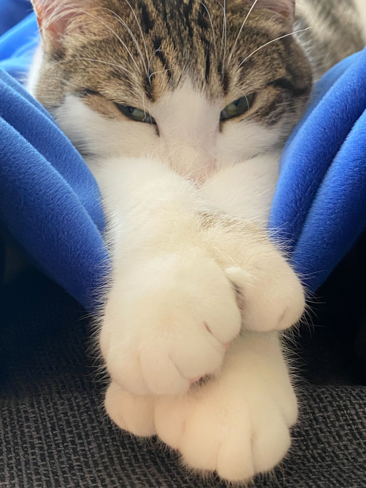
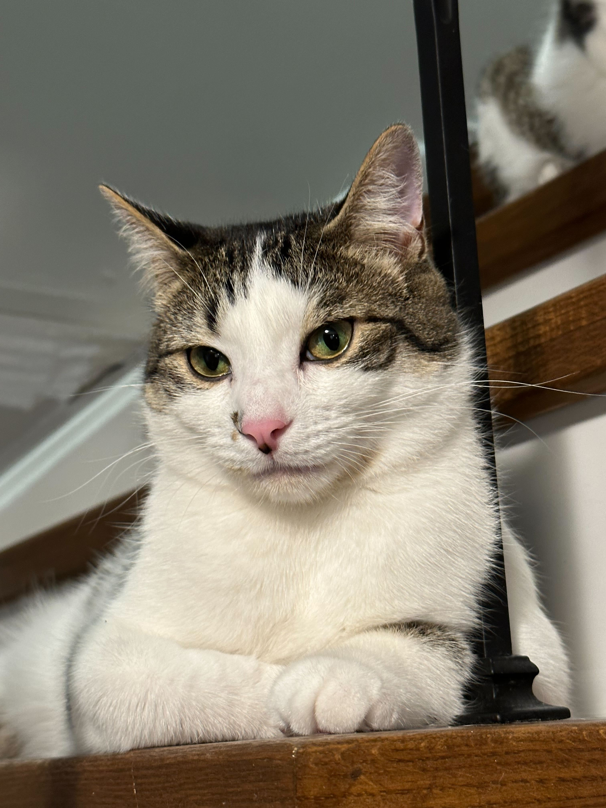
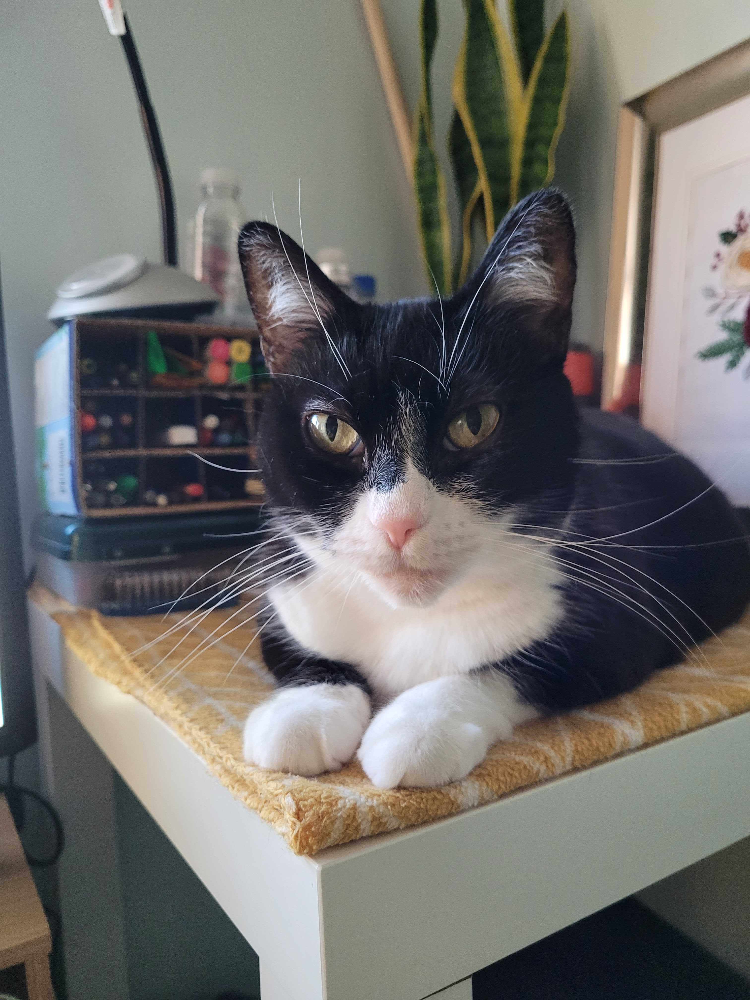
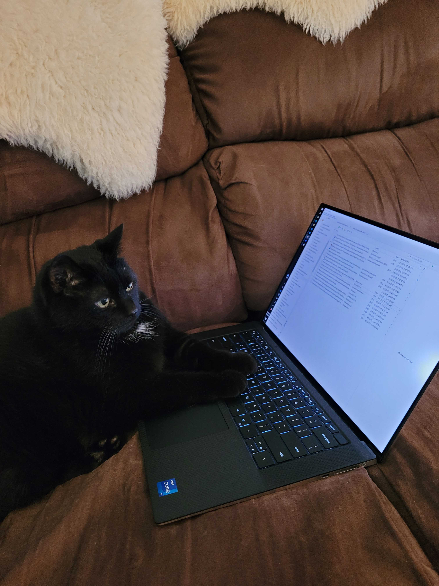
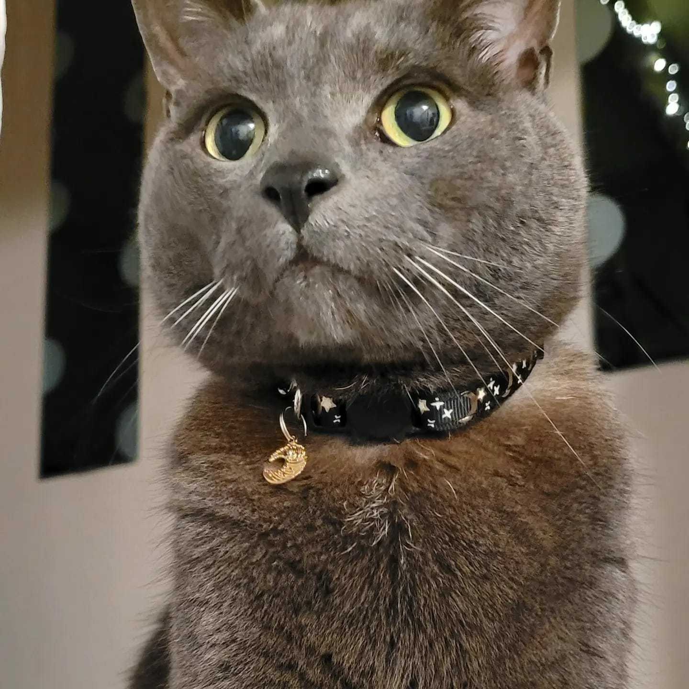
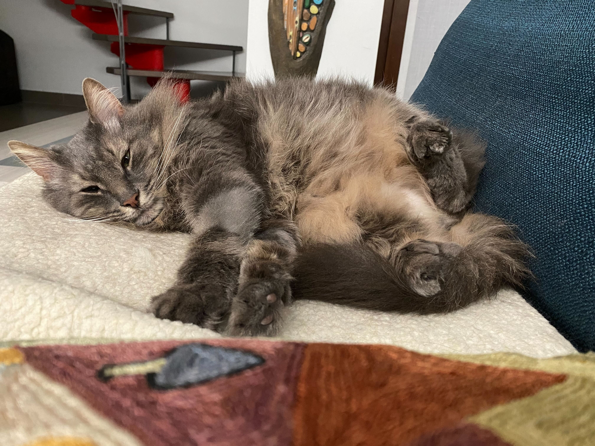
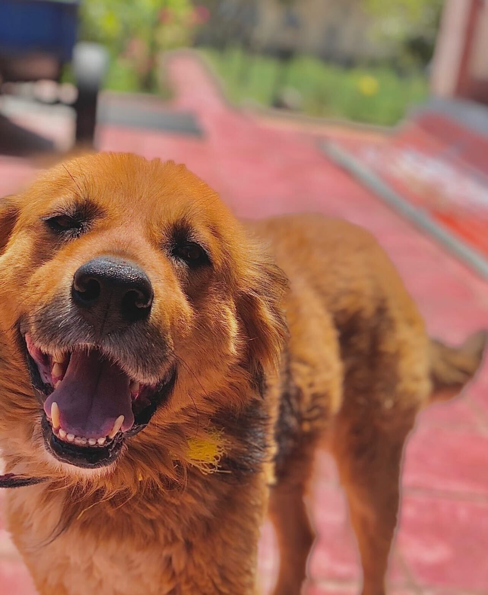

Welcome to our CLAW-some pets page, where we introduce you to the adorable companions that lend a helping 'paw' to our pursuits in applied perception and psychophysics. These fur-tastic friends not only bring joy to our lab but also make the science of understanding purrception more enjoyable.
Directors

Sophie Wolfe
Assistant Pawfessor, PsychologyUniversity of Toronto Mississauga
Meet Sophie, Dr. Kosovicheva and Dr. Wolfe's feline wonder who's stealing hearts with her extra-toed paws and endless charm! Beyond her paw-sitive peculiarity, Sophie's heart is as big as her adorable paws. With an insatiable love for food, a penchant for cozy laps, and an unwavering devotion to playtime with her favorite toys, Sophie is truly a purrfect blend of quirks and cuddles.

Howl Wolfe
Assistant Pawfessor, PsychologyUniversity of Toronto Mississauga
Meet Howl, the adorable brother to Sophie, with a chonky charm that's hard to resist. Howl is Dr. Kosovicheva and Dr. Wolfe's furry friend, who's loaf like tendencies adds an extra dose of warmth to every room he graces. Whether he's engrossed in bird watching, cozied up in his banana cat bed, or rolling over for belly rubs, Howl's unhurried approach to life is a heartwarming reminder to find joy in the simplest of pleasures.
Postdoctoral Fellows

Tuna Song
Pawstdoctoral Fellow, PsychologyUniversity of Toronto Mississauga
Introducing Tuna, the food-loving sunbather who doubles as Jiali's purr-sonal work supervisor. With a nose for treats and a fondness for sunbathing, Tuna's sunny disposition and diligent desk presence are bound to brighten any task at hand.

Taco Song
Pawstdoctoral Fellow, PsychologyUniversity of Toronto Mississauga
Taco is the ultimate foodie feline who finds joy in both drinking from faucets and sitting on keyboards. With an affinity for treats, taps, and typing, Taco's unique interests keep life interesting. When not revisiting his food bowl, Jiali will find Taco offering a helping paw to her code, adding a touch of paw-sitivity to her daily routine!
Graduate Students

Diesel Haseeb
Introducing Diesel, Zainab's four-legged furry friend who has meowed his way into her heart. With love for cookies, chips and all things dairy, Diesel tries to worm his way into getting his favourite snacks with some strategic purring, head rubs, and meows. When he's not indulging his cravings, you'll likely find Diesel nestled amidst fresh laundry or keeping Zainab company while snuggling in for some mat-lap time.
Undergraduates

Dino Guidi
Say hello to Dino, Silvia's well-traveled and utterly social feline who's living life in the lap of luxury. With a passport full of adventures and a heart full of charm, Dino's globetrotting ways are matched only by his love for a pampered lifestyle. Whether he's making friends near or far, Dino's irresistible charm and well-practiced purrs make him the ultimate jet-setting, spoiled sweetheart.

Max Tafazzoli
Meet Max, Dorsa's charismatic canine, with a taste for sausages and a love for singing in his sleep. With curiosity as his guide and playfulness as his mantra, Max is on a mission to explore and enjoy every moment. Whether he's chasing his tail or cuddling up close, Max's vibrant personality makes everyday that much better.

Lily Lim
Meet Brooke's cat Lily. Even though she's past her teenage years, she's still a diva who will stop at nothing to get what she wants, especially her treats. Her echoing purrs allow her to be the purrfect snuggle buddy.